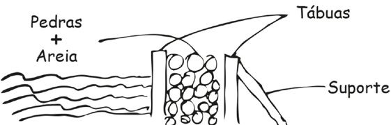

Capítulo 5
Bill Denbrough vence o diabo (I)
1
Bill Denbrough pensa: Estou praticamente viajando no espaço; daria no mesmo estar dentro de uma bala disparada de uma arma.
Embora seja perfeitamente verdadeiro, ele não acha esse pensamento confortável. Na verdade, pela primeira hora que segue a decolagem do Concorde (ou talvez levantamento fosse uma maneira melhor de dizer), saindo de Heathrow, ele está enfrentando um surto leve de claustrofobia. O avião é estreito, de maneira perturbadora. A refeição é quase requintada, mas as comissárias que a servem precisam se contorcer, inclinar e agachar para fazer o serviço; elas parecem uma trupe de ginastas. Ver esse trabalho cansativo tira um pouco do prazer da comida para Bill, embora o homem sentado ao seu lado não pareça particularmente incomodado.
O homem é outro inconveniente. Ele é gordo e não exatamente limpo; pode haver colônia Ted Lapidus espalhada na pele, mas por baixo dela, Bill detecta os odores inconfundíveis de sujeira e suor. Ele também não está sendo muito cuidadoso com o cotovelo esquerdo; de tempos em tempos, dá uma leve cutucada em Bill.
Seus olhos são atraídos toda hora para o painel digital na frente da cabine. Ele mostra a velocidade com que a bala inglesa está voando. Agora, quando o Concorde alcança a velocidade ideal. Bill pega a caneta no bolso da camisa e usa a ponta para clicar nos botões do relógio com computador que Audra lhe deu no Natal anterior. Se o medidor de velocidade estiver certo, e Bill não tem motivo nenhum para achar que não está, então eles estão voando a 30 quilômetros por minuto. Ele não tem certeza se é uma coisa que queira mesmo saber.
Do lado de fora da janela, que é tão pequena e grossa quanto a janela em uma das velhas cápsulas espaciais Mercury, ele consegue ver um céu que não é azul, mas de um roxo crepuscular, embora eles estejam na metade do dia. No ponto em que o mar e o céu se encontram, ele consegue ver que a linha do horizonte fica ligeiramente curva. Estou sentado aqui, pensa Bill, com um Bloody Mary na mão e o cotovelo de um homem gordo e sujo cutucando meu bíceps, observando a curvatura da Terra.
Ele sorri um pouco, pensando que um homem que é capaz de encarar uma coisa assim não devia ter medo de nada. Mas ele tem medo, e não só de voar a 30 quilômetros por minuto nessa casca estreita e frágil. Ele quase consegue sentir Derry correndo rapidamente em sua direção. E essa é exatamente a expressão para se referir a isso. A 30 quilômetros por minuto ou não, a sensação é de estar perfeitamente parado enquanto Derry corre na direção dele como um enorme carnívoro que ficou deitado esperando por muito tempo e finalmente saiu do esconderijo. Derry, ah, Derry! Vamos escrever uma ode a Derry? O fedor de suas fábricas e de seus rios? O silêncio majestoso de suas ruas cheias de árvores? A biblioteca? A Torre de Água? O parque Bassey? A Escola Derry?
O Barrens?
Luzes estão se acendendo em sua cabeça: grandes holofotes. É como se ele tivesse passado 27 anos sentado em um teatro escuro, esperando que alguma coisa acontecesse, e agora finalmente começou. O cenário sendo revelado pedaço a pedaço e holofote a holofote não é uma comédia inocente como Arsênico e alfazema; para Bill Denbrough, parece mais O gabinete do dr. Caligari.
Todas essas histórias que escrevi, ele pensa com uma espécie idiota de divertimento. Todos aqueles romances. Derry é o local de origem de todos eles; Derry foi a nascente. Eles vieram do que aconteceu naquele verão, e do que aconteceu a George no outono anterior. Tantos entrevistadores me fizeram AQUELA PERGUNTA… e eu dei a resposta errada.
O cotovelo do homem gordo o atinge de novo, e ele derrama um pouco do drinque. Bill quase diz alguma coisa, mas depois pensa melhor.
AQUELA PERGUNTA, é claro, era “De onde você tira suas ideias?”. Era uma pergunta que Bill achava que todos os escritores de ficção tinham que responder, ou fingir responder, pelo menos duas vezes por semana, mas um cara como ele, que ganhava a vida escrevendo coisas que nunca aconteceram e nunca poderiam acontecer, tinha que responder, ou fingir responder, com muito mais frequência do que isso.
— Todos os escritores têm um canal que desemboca no subconsciente — dizia ele para os repórteres, deixando de mencionar que duvidava mais a cada ano que passava que o subconsciente fosse uma coisa que existia. — Mas o homem ou mulher que escreve histórias de terror tem um canal que vai mais longe, talvez… até o sub-subconsciente, podemos dizer.
Era uma resposta elegante, mas ele jamais acreditara nela. Subconsciente? Bem, havia alguma coisa lá dentro, sim, mas Bill achava que as pessoas faziam alarde demais por uma função que devia ser o equivalente mental de olhos lacrimejando quando caía poeira neles ou soltar gases uma hora depois de um jantar exagerado. A segunda metáfora provavelmente era a melhor, mas não se podia dizer para entrevistadores que, no que dizia respeito a você, coisas como sonhos e lembranças vagas e sensações como déjà-vu não passavam de um bando de peidos mentais. Mas eles pareciam precisar de alguma coisa, todos aqueles repórteres com caderninhos e gravadores japoneses, e Bill queria ajudá-los o máximo que pudesse. Ele sabia que escrever era um trabalho difícil, um trabalho muito difícil. Não havia necessidade de tornar o deles ainda mais difícil ao dizer “Meu amigo, daria no mesmo você me perguntar ‘Quem cortou o queijo?’ e pronto.”
Agora, ele pensou: você sempre soube que estavam fazendo as perguntas erradas, mesmo antes de Mike ligar; agora você também sabe qual era a pergunta certa. Não de onde você tira as ideias, mas por que tem essas ideias. Havia um canal, claro, mas não era nem a versão freudiana nem a junguiana do subconsciente que jorrava por ele; nenhum sistema de drenagem interior da mente, nenhuma caverna subterrânea cheia de Morlocks esperando para agir. Não havia nada do outro lado do canal além de Derry. Só Derry. E…
… e quem é esse, caminhando na minha ponte?
Ele se senta ereto de repente, e desta vez é o cotovelo dele que foge ao controle; ele afunda na lateral do vizinho gordo de assento por um momento.
— Cuidado, amigo — diz o homem gordo. — É apertado aqui, sabe?
— Se você parar de me cutucar com o seu, eu tento parar de cu-cutucar com o m-meu.
O homem gordo faz um olhar azedo, incrédulo, como quem diz “de que você está falando?” Bill simplesmente olha para ele até o homem gordo afastar o olhar resmungando.
Quem está aí?
Quem está caminhando na minha ponte?
Ele olha pela janela de novo e pensa: Estamos vencendo o diabo.
Seus braços e nuca ficam arrepiados. Ele toma o resto do drinque de um gole só. Outra daquelas luzes intensas se acendeu.
Silver. Sua bicicleta. Era assim que ele a chamava, em homenagem ao cavalo do Cavaleiro Solitário. Era uma Schwinn grande, com 70 centímetros de altura. “Você vai se matar nisso, Billy”, dissera seu pai, mas sem preocupação real na voz. Ele demonstrava pouca preocupação com qualquer coisa desde a morte de George. Antes, ele era durão. Justo, mas durão. Depois, dava para enrolá-lo. Ele fazia gestos paternais, fazia coisas paternais, mas eram apenas gestos e coisas. Era como se ele estivesse sempre prestando atenção para ver se George voltaria para casa.
Bill a tinha visto na vitrine da loja Bike and Cycle na rua Center. Estava apoiada tristemente no descanso, maior do que a maior das outras em exibição, sem brilho nas partes em que as outras brilhavam, reta nas partes em que as outras eram curvas, dobrada em partes em que as outras eram retas. Preso no pneu da frente. havia um cartaz:
USADA
Faça uma proposta
O que aconteceu foi que Bill entrou e o dono fez uma proposta a ele, que aceitou (ele não saberia negociar com o dono da loja nem que sua vida dependesse disso), e o preço que o homem pediu, 24 dólares, pareceu justo para Bill; até mesmo generoso. Ele pagou por Silver com dinheiro que vinha guardando havia sete ou oito meses: dinheiro de aniversário, dinheiro de Natal, dinheiro de cortar grama. Ele vinha reparando na bicicleta na vitrine desde o Dia de Ação de Graças. Bill pagou por ela e empurrou para casa assim que a neve começou a derreter de vez. Era engraçado, porque ele nunca havia pensado muito em ter uma bicicleta até o ano anterior. A ideia pareceu surgir em sua mente de repente, talvez em um dos dias infinitos depois que George morreu. Foi assassinado.
No começo, Bill quase se matou mesmo. A primeira volta na bicicleta nova terminou com Bill derrubando-a de propósito para não ir de cara em uma cerca no final da travessa Kossuth (ele não estava com tanto medo de bater na cerca, e sim de quebrá-la e cair 18 metros até o Barrens). Ele escapou dessa aventura com um corte de 12 centímetros entre o pulso e o cotovelo do braço esquerdo. Menos de uma semana depois, viu-se incapaz de frear rápido o bastante e disparou pelo cruzamento da Witcham com a Jackson a talvez 55 quilômetros por hora, um garotinho em uma bicicleta cinza-escura mastondôntica (Silver era prateada apenas pelo alcance energético de uma imaginação predisposta), com cartas de baralho fuzilando os raios das rodas da frente e de trás em um rugido regular, e se um carro estivesse vindo, ele estaria morto. Como Georgie.
Ele ganhou o controle de Silver aos poucos conforme a primavera avançava. Nenhum dos pais reparou durante esse tempo que ele estava cortejando a morte em uma bicicleta. Ele pensou que, depois de alguns dias, eles pararam de ver a bicicleta; para eles, era apenas uma velharia com tinta lascada que ficava encostava na parede da garagem em dias chuvosos.
Mas Silver era bem mais do que uma velharia poeirenta. Ela não parecia grande coisa, mas voava como o vento. O amigo de Bill, seu único amigo de verdade, era um garoto chamado Eddie Kaspbrak, e Eddie era bom com coisas mecânicas. Ele mostrou a Bill como colocar Silver em forma: que parafusos apertar e verificar regularmente, onde lubrificar a corrente, como apertá-la, como fazer um remendo em pneu furado.
— Você devia pintar ela — ele se lembrava de Eddie dizer um dia, mas Bill não queria pintar Silver. Por motivos que não sabia explicar para si mesmo, ele queria que a Schwinn ficasse do jeito que era. A bicicleta era um trambolho, do tipo que um garoto descuidado deixava com frequência no gramado na chuva, uma bicicleta que só devia fazer barulhos, sacudir e frear mal. Parecia um trambolho, mas voava como o vento. Ela…
— Ela venceria o diabo — diz ele em voz alta e ri. Seu vizinho gordo de assento olha para ele com severidade; a gargalhada tem uma qualidade de uivo que deu arrepios em Audra mais cedo.
Sim, ela parecia muito vagabunda, com a tinta velha e a garupa antiquada acima da roda traseira e a buzina com um bulbo de borracha preta; aquela buzina estava soldada de maneira permanente ao guidão com um parafuso enferrujado do tamanho do punho de um bebê. Bem vagabunda.
Mas Silver conseguia andar? Conseguia? Cristo!
E era uma coisa muito boa, porque Silver salvou a vida de Bill Denbrough na quarta semana de junho de 1958, a semana depois que ele conheceu Ben Hanscom, a semana depois que ele, Ben e Eddie construíram a represa, a semana em que Ben, Richie “Boca de Lixo” Tozier e Beverly Marsh apareceram no Barrens depois da matinê de sábado. Richie estava atrás, na garupa, no dia em que Silver salvou a vida de Bill… então ele supunha que Silver havia salvado a de Richie também. E ele se lembrava da casa da qual eles estavam fugindo. Lembrava muito bem. Aquela casa maldita na rua Neibolt.
Ele correu para vencer o diabo naquele dia, ah, sim, com certeza, não tenha a menor dúvida. Um diabo com olhos tão brilhantes quanto moedas velhas e mortais. Um diabo peludo com a boca cheia de dentes sangrentos. Mas tudo isso veio depois. Se Silver salvou a vida dele e de Richie naquele dia, então talvez tenha salvado a de Eddie Kaspbrak no dia em que Bill e Eddie conheceram Ben ao lado dos restos destruídos da represa no Barrens. Henry Bowers, com aparência de quem tinha sido jogado em um latão de lixo, tinha quebrado o nariz de Eddie; a asma atacou com tudo e sua bombinha estava vazia. Assim, foi Silver naquele dia também, Silver ao resgate.
Bill Denbrough, que não subia em uma bicicleta havia quase 17 anos, olha pela janela de um avião no qual ninguém teria acreditado, nem mesmo imaginado fora de uma revista de ficção científica, no ano de 1958. Hi-yo Silver, VAMOOOS!, pensa ele, e tem que fechar os olhos para lutar contra o ardor repentino das lágrimas.
O que aconteceu com Silver? Ele não consegue lembrar. Aquela parte da história ainda está escura; esse holofote ainda precisa ser aceso. Talvez seja melhor assim. Talvez seja um ato de misericórdia.
Hi-yo.
Hi-yo Silver.
Hi-yo Silver
2
— VAMOOOS — gritou ele. O vento jogou as palavras por cima de seu ombro como uma fita de papel crepom. Elas saíram altas e fortes, as palavras, com um rugido triunfante. Foram as únicas a sair assim.
Ele pedalou pela rua Kansas na direção da cidade, ganhando velocidade aos poucos. Silver deslizava quando pegava embalo, mas pegar embalo dava trabalho. Ver a bicicleta cinza pegar velocidade era um pouco como ver um avião grande na pista de decolagem. No começo, você não conseguia acreditar que uma engenhoca tão grande e bamboleante conseguiria sair do chão, a ideia era absurda. Mas então você conseguia ver a sombra embaixo dele, e antes de ter tempo de se perguntar se era miragem, a sombra estava atrás do avião e ele estava voando, abrindo espaço no ar, tão reluzente e gracioso quanto um sonho em uma mente satisfeita.
Silver era assim.
Bill chegou a uma ligeira descida e começou a pedalar mais rápido, com as pernas trabalhando enquanto ele inclinava o corpo sobre o quadro. Ele aprendera muito rapidamente, depois de ser atingido pelo quadro no pior lugar em que um menino pode ser atingido, a puxar a cueca para o mais alto que conseguia quando montava em Silver. No final do verão, ao observar esse processo, Richie diria: Bill faz isso porque acha que pode ter filhos que sobrevivam um dia. Parece uma má ideia, mas, ei! Eles sempre podem puxar a mãe, certo?
Ele e Eddie haviam baixado o assento o máximo possível, e agora ele batia e arranhava a lombar enquanto pedalava. Uma mulher arrancando ervas daninhas do jardim encobriu os olhos para vê-lo passar. Ela sorriu um pouco. O garoto na bicicleta enorme a lembrou um macaco que ela já vira em um monociclo no circo Barnum e Bailey. Mas ele pode acabar se matando, pensou ela, voltando a atenção para o jardim. Aquela bicicleta é grande demais para ele. Só que não era da conta dela.
3
Bill era sensato demais para discutir com os garotos grandes quando eles surgiram no mato parecendo caçadores mal-humorados atrás de um animal que já havia ferido um deles. Mas Eddie abriu a boca impulsivamente, e Henry Bowers descontou nele.
Bill sabia bem quem eles eram; Henry, Arroto e Victor eram os piores garotos da escola Derry. Eles já tinham dado uma surra ou duas em Richie Tozier, com quem Bill às vezes brincava. Do ponto de vista de Bill, era em parte culpa de Richie; ele não era conhecido como Boca de Lixo por nada.
Um dia em abril, Richie disse alguma coisa sobre as golas deles quando os três estavam passando no pátio da escola. As golas estavam levantadas, como a de Vic Morrow em Sementes da violência. Bill, que estava sentado junto à parede do prédio que havia ali perto jogando bolas de gude, não pegou tudo que foi dito. Nem Henry e seus amigos… mas eles ouviram o bastante para se virar na direção de Richie. Bill achava que Richie pretendia dizer o que fosse em voz baixa. O problema era que Richie não tinha voz baixa.
— O que você disse, nerd quatro olhos? — perguntou Victor Criss.
— Não falei nada — disse Richie, e essa negação, junto com seu rosto, que parecia sensatamente consternado e assustado, poderia ter encerrado tudo. Só que a boca de Richie era um cavalo meio selvagem que tinha talento de fugir sem motivo nenhum. Ele acrescentou de repente: — Você devia tirar a cera do ouvido, grandão. Quer um pouco de pólvora?
Eles ficaram olhando com incredulidade por um momento, depois saíram correndo atrás dele. Bill Gago viu a corrida desigual do começo ao final previsível de onde estava, na lateral do prédio. Não fazia sentido se envolver; os três idiotas ficariam felizes em dar surra em dois garotos pelo preço de um.
Richie correu na diagonal pelo parquinho dos pequenos, pulando sobre gangorras e desviando de balanços, dando-se conta de que havia corrido para um beco sem saída apenas quando bateu na cerca de arame entre o parquinho e o parque ao lado da escola. Então ele tentou subir a cerca, com dedos se agarrando e pontas de tênis procurando apoio, e estava a dois terços do caminho até o topo quando Henry e Victor o puxaram para baixo, Henry segurando pelas costas da jaqueta e Victor segurando o traseiro da calça. Richie estava gritando quando o agarraram na cerca. Ele bateu no asfalto com as costas. Seus óculos voaram. Ele esticou a mão para pegá-los, e Arroto Huggins os chutou para longe, e era por isso que uma das lentes estava remendada com fita adesiva no verão.
Bill fez uma careta e andou até a frente do prédio. Ele observou a sra. Moran, uma das professoras do quarto ano, já correndo para apartar a briga, mas ele sabia que eles bateriam muito em Richie até lá, e quando ela chegasse, Richie estaria chorando. Bebê chorão, bebê chorão, olha só o bebê chorão.
Bill só tinha tido problemas pequenos com eles. Eles debochavam de sua gagueira, é claro. Uma crueldade aleatória ocasional fazia parte das brincadeiras; um dia chuvoso, quando eles estavam indo almoçar no ginásio, Arroto Huggins derrubou o saco com o almoço de Bill e pisou em cima com a bota, esmagando tudo que havia dentro.
— Ah, n-n-nossa! — gritou Arroto com horror falso, levantando as mãos e balançando ao redor do rosto. — De-de-desculpa por causa do seu al-al-almoço, cara de ma-ma-merda. — E saiu andando pelo corredor em direção ao local em que Victor Criss estava, recostado no bebedouro do lado de fora do banheiro masculino, rindo até quase ter uma hérnia. Mas isso não foi tão ruim; Bill comeu metade de um sanduíche de creme de amendoim com geleia de Eddie Kaspbrak, e Richie ficou feliz em lhe dar seu ovo cozido, que sua mãe colocava como almoço a cada dois dias e que lhe dava ânsia de vômito, dizia ele.
Mas você tinha que ficar longe do caminho deles, e se não conseguisse fazer isso, tinha que tentar ser invisível.
Eddie esqueceu as regras, então eles bateram nele.
Ele não estava muito mal até os garotos grandes descerem o rio e passarem para o outro lado, apesar de o nariz estar sangrando como um chafariz. Quando o lenço de Eddie estava encharcado, Bill deu a ele o seu e o fez colocar uma das mãos na nuca e inclinar a cabeça para trás. Bill conseguia se lembrar da mãe mandando Georgie fazer isso, porque Georgie às vezes tinha sangramentos nasais…
Ah, mas doía muito pensar em Georgie.
Só quando o som do progresso animal dos garotos grandes pelo Barrens morreu e o sangramento do nariz de Eddie parou foi que a asma ficou ruim. Ele começou a arfar em busca de ar, com as mãos se abrindo e fechando como armadilhas, a respiração apitando na garganta.
— Merda! — ofegou Eddie. — Asma! Porcaria!
Ele tateou em busca do aspirador e acabou conseguindo tirá-lo do bolso. Parecia quase um frasco de limpa-vidros, do tipo que tem o acessório de spray em cima. Ele o enfiou na boca e apertou o gatilho.
— Melhor? — perguntou Bill com ansiedade.
— Não. Está vazio. — Eddie olhou para Bill com um pânico nos olhos que dizia me ferrei, Bill! Me ferrei!
A bombinha vazia rolou para longe da mão dele. O riacho continuou a correr, sem se importar nem um pouco por Eddie Kaspbrak mal conseguir respirar. Bill pensou aleatoriamente que os garotos grandes estavam certos sobre uma coisa: era mesmo uma represa de bebê. Mas eles estavam se divertindo, droga, e ele sentiu uma fúria cega e repentina pelo fato de a situação ter chegado a isso.
— Pe-pe-pega leve, E-Eddie — disse ele.
Nos quarenta minutos seguintes, mais ou menos, Bill ficou sentado ao lado dele, com a expectativa de que o ataque de asma de Eddie fosse a qualquer momento diminuir gradualmente, passando a desconforto. Quando Ben Hanscom apareceu, o desconforto tinha virado medo real. A asma não apenas não estava cedendo; estava piorando. E a Center Street Drug, onde Eddie comprava o medicamento, ficava a quase 5 quilômetros. E se ele fosse buscar o remédio de Eddie e o encontrasse inconsciente quando voltasse? Inconsciente ou
(não merda por favor não pense isso)
ou mesmo morto, insistia sua mente implacavelmente.
(como Georgie morto como Georgie)
Não seja um babaca! Ele não vai morrer!
Não, provavelmente não. Mas e se ele voltasse e encontrasse Eddie em coma? Bill sabia tudo sobre comas; tinha até deduzido que o nome era esse porque era um estado em que o nada comia seu cérebro. Em programas de médicos como Ben Casey, as pessoas sempre entravam em coma, e às vezes permaneciam assim apesar de todos os gritos mal-humorados de Ben Casey.
Assim, ele ficou ali sentado, sabendo que tinha que ir, pois não poderia ajudar Eddie em nada ao ficar aqui, mas sem querer deixá-lo sozinho. Uma parte irracional e supersticiosa dele tinha certeza de que Eddie entraria em coma no minuto que ele, Bill, virasse as costas. E então, ele olhou riacho acima e viu Ben Hanscom ali de pé. Ele sabia quem Ben era, é claro; o garoto mais gordo em qualquer escola tinha sua própria espécie de notoriedade infeliz. Ben era da outra turma de quinto ano. Bill às vezes o via no recreio, de pé sozinho, normalmente em um canto, olhando para um livro e comendo o almoço que levava em um saco do tamanho de um saco de lavanderia.
Ao olhar para Ben agora, Bill achou que ele estava pior até do que Henry Bowers. Era difícil de acreditar, mas verdade. Bill não conseguia começar a imaginar a luta cataclísmica em que esses dois devem ter se envolvido. O cabelo de Ben estava espetado e coberto de terra. O suéter ou moletom dele (era difícil saber o que era no começo do dia, e sem dúvida não importava agora) estava destruído, manchado com uma mistura de sangue e grama. Sua calça estava puída no joelho.
Ele viu Bill olhando para ele e se encolheu um pouco, com olhos cautelosos.
— Na-na-na-não v-v-vai! — gritou Bill. Ele ergueu as mãos vazias, com as palmas para fora, para mostrar que era inofensivo. — Nós pa-pa-precisamos de a-a-ajuda.
Ben chegou mais perto, ainda cauteloso. Ele andava como se uma ou as duas pernas estivessem doendo muito.
— Eles foram embora? Bowers e os outros caras?
— F-foram — disse Bill. — Escuta, v-você, pa-pode ficar com meu a-amigo enquanto vou buscar o re-remédio dele? Ele tem a-a-a-a…
— Asma?
Bill assentiu.
Ben desceu pelo resquício da barragem e caiu dolorosamente de joelhos ao lado de Eddie, que estava deitado de costas com os olhos fechados e o peito arfando.
— Qual bateu nele? — perguntou Ben por fim. Ele olhou para cima, e Bill viu no rosto do menino gordo a mesma raiva frustrada que estava sentindo. — Foi Henry Bowers?
Bill assentiu.
— Faz sentido. Claro, vai. Eu fico com ele.
— O-o-obrigado.
— Ah, não me agradeça — disse Ben. — Sou o motivo de eles terem partido pra cima de vocês. Vai. Anda logo. Tenho que ir pra casa jantar.
Bill foi sem dizer mais nada. Teria sido bom dizer para Ben não levar tão a sério; o que aconteceu foi culpa de Ben tanto quanto foi de Eddie, pela burrice de abrir a boca. Caras como Henry e seus amigos eram um acidente prestes a acontecer a qualquer momento; a versão infantil de enchentes, tornados e pedras na vesícula. Teria sido bom dizer isso, mas ele estava tão tenso naquele momento que levaria uns 20 minutos, e até lá Eddie já poderia ter entrado em coma (isso foi outra coisa que Bill aprendeu com os doutores Casey e Kildare; as pessoas nunca ficavam em coma, elas sempre entravam em coma).
Ele correu riacho abaixo e olhou para trás uma vez. Viu Ben Hanscom juntando pedras na beirada da água. Por um momento, Bill não conseguiu entender o que ele estava fazendo, mas então, tudo ficou claro. Era uma pilha de munição. Para o caso de eles voltarem.
4
O Barrens não era mistério para Bill. Ele tinha brincado muito ali naquela primavera, às vezes com Richie, mais vezes com Eddie, às vezes sozinho. Não havia explorado toda a área, mas conseguia voltar até a rua Kansas a partir do Kenduskeag sem problema, e foi o que fez. Ele chegou a uma ponte de madeira onde a rua Kansas atravessava um dos pequenos riachos sem nome que saíam do sistema de drenagem de Derry para se juntar ao Kenduskeag abaixo. Silver estava presa debaixo dessa ponte, com o guidão amarrado aos pilares com uma tira de corda, para manter as rodas fora da água.
Bill soltou a corda, prendeu na camisa e levou Silver até a calçada pelo uso de força, ofegando e suando; perdeu o equilíbrio duas vezes, caindo de traseiro no chão.
Mas finalmente ela estava de pé. Bill passou a perna pelo quadro.
E como sempre, quando ele estava sobre Silver, ele se tornava outra pessoa.
5
— Hi-yo Silver, VAMOOOS!
As palavras saíram mais graves do que sua voz normal; era quase a voz do homem que ele se tornaria. Silver ganhou velocidade lentamente, com o estalo baixo das cartas de baralho nas rodas da bicicleta marcando o ritmo. Bill ficou de pé nos pedais, com as mãos firmes no guidão, com os punhos virados para cima. Ele parecia um homem tentando levantar um halter incrivelmente pesado. Tendões saltavam em seu pescoço. Veias pulsavam em suas têmporas. Sua boca estava virada para baixo em uma careta trêmula de esforço enquanto ele lutava a batalha familiar contra o peso e a inércia, numa explosão para botar Silver em movimento.
Como sempre, o esforço valeu a pena.
Silver começou a correr quase bruscamente. Casas deslizaram de forma suave em vez de surgindo uma a uma. À sua esquerda, onde a rua Kansas cortava a Jackson, o Kenduskeag livre se tornava o canal. Depois do cruzamento, a rua Kansas seguia rapidamente colina abaixo na direção da Center e da Main, a área comercial de Derry.
Ruas se cruzavam com frequência aqui, mas elas todas tinham placas de PARE que funcionavam a favor de Bill, e a possibilidade de um motorista um dia desrespeitar uma dessas placas e esmagá-lo até virar uma sombra sangrenta na rua nunca passou pela mente dele. É improvável que ele mudasse o caminho mesmo se tivesse pensado. Talvez fizesse isso mais cedo ou mais tarde na vida, mas esta primavera e começo de verão foram um momento agitado e estranho para ele. Ben ficaria atônito se alguém lhe perguntasse se ele era solitário; Bill ficaria igualmente atônito se alguém lhe perguntasse se ele estava cortejando a morte. É c-c-claro que n-não!, ele teria respondido imediatamente (e com indignação), mas isso não mudava o fato de que suas disparadas pela rua Kansas até a cidade se tornaram cada vez mais voos banzai conforme o tempo esquentava.
Essa parte da rua Kansas era conhecida como colina Up-Mile. Bill a encarou a toda velocidade, inclinado sobre o guidão de Silver para cortar a resistência do vento, com uma das mãos sobre o bulbo de borracha da buzina para avisar os desatentos, o cabelo ruivo voando da cabeça em uma onda. O estalo das cartas tinha virado um rugido firme. A careta de esforço tinha se tornado um sorriso bobo. As residências à direita cederam lugar a prédios comerciais (armazéns e frigoríficos, em sua maioria) que voavam em uma rapidez apavorante, mas satisfatória. À esquerda, o canal era um piscar de fogo no canto do olho dele.
— HI-YO SILVER, VAMOOOS! — gritou ele com triunfo.
Silver voou pelo primeiro meio-fio, e como sempre acontecia nesse ponto, seus pés perderam o contato com o pedal. Ele estava desenfreado, agora completamente no colo de qualquer deus que tivesse recebido a tarefa de proteger garotinhos. Ele entrou na rua, indo a talvez 25 quilômetros por hora acima do limite de 40.
Tudo estava para trás agora: a gagueira, os olhos sofridos e vazios do pai enquanto mexia na oficina da garagem, a visão terrível da poeira sobre a tampa do piano no andar de cima; com poeira porque sua mãe não tocava mais. A última vez foi no enterro de George, três hinos metodistas. George saindo na chuva, usando a capa amarela, carregando o barquinho de jornal com o brilho de parafina; o sr. Gardener subindo a rua 20 minutos depois com o corpo dele enrolado em uma colcha manchada de sangue; o grito sofrido da mãe. Tudo para trás. Ele era o Cavaleiro Solitário, era John Wayne, era Bo Diddley, era qualquer pessoa que quisesse ser e ninguém que chorava e tinha medo e queria a ma-ma-mãe.
Silver voou e Bill Gago Denbrough voou com ela; a sombra de guindaste voou atrás deles. Eles correram pela colina Up-Mile juntos; as cartas de baralho rugiram. Os pés de Bill alcançaram os pedais de novo e ele começou a pedalar, querendo ir até mais rápido, querendo chegar a uma velocidade hipotética, não do som, mas da lembrança, e quebrar a barreira da dor.
Ele continuou disparado, inclinado sobre o guidão; correu para vencer o diabo.
A interseção de três ruas, a Kansas, a Center e a Main, estava se aproximando rápido. Era um horror de tráfego de mão única, placas conflitantes e sinais de trânsito que deviam ser sincronizados, mas não eram. O resultado, como proclamara um editorial do Derry News no ano anterior, era uma rotatória concebida no inferno.
Como sempre, os olhos de Bill seguiram para a direita e para a esquerda rapidamente, avaliando o fluxo do trânsito e procurando buracos. Se sua avaliação estivesse errada, se ele gaguejasse, poderia se dizer, ele ficaria muito ferido ou morreria.
Ele disparou em meio ao trânsito lento que se amontoava no cruzamento, furou um sinal vermelho e desviou para a direita a fim de evitar um Buick desajeitado. Lançou um olhar rápido por cima do ombro para ter certeza de que a pista do meio estava vazia. Olhou para a frente de novo e viu que em cerca de cinco segundos ia bater na traseira de uma picape que tinha parado no meio do cruzamento enquanto o tipo simpático que dirigia girava o pescoço para ler todas as placas e ter certeza de não ter tomado uma entrada errada que o levou a Miami Beach.
A pista à direita de Bill estava tomada por um ônibus intermunicipal Derry-Bangor. Ele seguiu naquela direção mesmo assim e passou no espaço entre a picape parada e o ônibus, ainda seguindo a 65 quilômetros por hora. No último segundo, ele virou a cabeça com força para um dos lados, como um soldado seguindo o comando de olhar para a direita com entusiasmo demais, para impedir que o espelho do lado do passageiro da picape rearrumasse seus dentes. Fumaça quente do diesel do ônibus rasgou sua garganta como uma dose de bebida forte. Ele ouviu um guinchar agudo quando um dos punhos da bicicleta desenhou uma linha na lateral de alumínio do ônibus. Bill teve um vislumbre do motorista, com o rosto branco como papel sob o quepe da Hudson Bus Company. O motorista estava sacudindo o punho para Bill e gritando alguma coisa. Bill duvidava que fosse feliz aniversário.
Havia um trio de senhoras atravessando a rua Main do lado do banco New England para o lado do The Shoeboat. Elas ouviram o som implacável das cartas e ergueram o olhar. Seus queixos caíram quando um garoto em uma enorme bicicleta passou a 15 centímetros delas como uma miragem.
O pior (e o melhor) da viagem estava para trás agora. Ele contemplara a verdadeira possibilidade de sua própria morte uma vez atrás da outra e se viu capaz de afastar o olhar. O ônibus não o esmagou; ele não se matou nem às três senhoras com as sacolas da Freese’s e cheques do Seguro Social; não foi esmagado na traseira da picape Dogde do homem simpático. Estava subindo a ladeira de novo, a toda velocidade. Alguma coisa (podemos chamar de desejo, era bom o bastante, não?) o acompanhava a toda também. Todos os pensamentos e lembranças o estavam alcançando (oi, Bill, nossa, quase te perdemos de vista ali atrás, mas aqui estamos nós), juntando-se a ele, subindo pela camisa, entrando em sua orelha e invadindo o cérebro como garotinhos descendo por um escorrega. Ele conseguia senti-los se ajeitando em seus locais de costume, com corpos febris empurrando uns aos outros. Nossa! Uau! Aqui estamos dentro da cabeça de Bill de novo! Vamos pensar em George! Certo! Quem quer começar?
Você pensa demais, Bill.
Não, esse não era o problema. O problema era que ele imaginava demais.
Ele entrou na travessa Richard e saiu na rua Center alguns momentos depois, pedalando devagar, sentindo o suor nas costas e no cabelo. Desceu de cima de Silver em frente à Center Street Drug Store e entrou.
6
Antes da morte de George, Bill teria transmitido os pontos principais para o sr. Keene falando com ele. O farmacêutico não era exatamente gentil, ou pelo menos Bill achava que não, mas era bem paciente, e não provocava nem debochava. Mas agora a gagueira de Bill estava bem pior, e ele realmente tinha medo de alguma coisa acontecer com Eddie se ele não fosse rápido.
Então, quando o sr. Keene disse “Oi, Billy Denbrough, posso ajudar?”, Bill pegou um folheto de propaganda de vitaminas, virou-o e escreveu atrás: Eddie Kaspbrak e eu estávamos brincando no Barrens. Ele teve um ataque forte de asma, mal consegue respirar. O senhor pode me dar um refil da bombinha dele?
Ele empurrou o bilhete por cima do balcão de vidro para o sr. Keene, que leu, olhou para os olhos ansiosos de Bill e disse:
— É claro. Espere aqui, e não mexa em nada que não deve.
Bill se equilibrou com impaciência de um pé para o outro enquanto o sr. Keene mexia na bancada de trás. Apesar de ele ter demorado menos de 5 minutos, pareceu uma eternidade até voltar com um dos vidros de plástico de Eddie. Ele entregou para Bill, sorriu e disse:
— Isso deve resolver.
— O-o-o-obrigado — disse Bill. — Não t-tenho di-di-di…
— Tudo bem, filho. A sra. Kaspbrak tem conta aqui. Vou acrescentar à conta dela. Tenho certeza de que ela vai querer agradecer pela gentileza.
Muito aliviado, Bill agradeceu ao sr. Keene e saiu rapidamente. O sr. Keene contornou o balcão para vê-lo ir embora. Ele viu Bill jogar a bombinha na cesta da bicicleta e montar desajeitadamente. Ele consegue mesmo andar numa bicicleta grande assim?, perguntou-se o sr. Keene. Duvido. Duvido muito. Mas o garoto Denbrough colocou a bicicleta em movimento sem cair de cabeça e saiu pedalando lentamente. A bicicleta, que para o sr. Keene parecia uma piada, balançou de um lado para outro. A bombinha rolou pela cesta.
O sr. Keene sorriu um pouco. Se Bill tivesse visto aquele sorriso, teria sido uma boa maneira de confirmar sua ideia de que o sr. Keene não era um dos campeões do mundo em gentileza. Foi azedo, o sorriso de um homem que vê muito com que se maravilhar, mas quase nada para valorizar na condição humana. Sim, ele acrescentaria a medicação de Eddie à conta de Sonia Kaspbrak, e, como sempre, ela ficaria surpresa e desconfiada em vez de grata, com o quanto o remédio era barato. Outros remédios eram tão preciosos, ela dizia. O sr. Keene sabia que a sra. Kaspbrak era uma daquelas pessoas que não acreditavam que coisas baratas podiam fazer algum bem. Ele realmente poderia ter arrancado dinheiro dela pelo HydrOx Mist do filho dela, e houve ocasiões em que ficou tentado… mas por que ele deveria se deixar fazer parte da tolice da mulher? Não estava passando fome nem nada.
Barato? Ah, sim. HydrOx Mist (Administrar conforme necessário vinha digitado em cada etiqueta autocolante que ele grudava em cada bombinha) era maravilhosamente barato, mas até a sra. Kaspbrak estava disposta a admitir que controlava muito bem a asma do filho, apesar disso. Era barato porque não era nada além de uma combinação de hidrogênio e oxigênio, com um toque de cânfora para dar um leve gosto medicinal ao spray.
Em outras palavras, o remédio de asma de Eddie era água de torneira.
7
Bill demorou mais tempo para voltar porque estava subindo a ladeira. Em vários locais, precisou descer e empurrar Silver. Ele não tinha a força muscular necessária para manter a bicicleta em movimento em ladeiras mais do que medianas.
Depois que acabou de prender a bicicleta e caminhou até o rio, eram 16h10. Todos os tipos de suposições terríveis cruzavam sua cabeça. O garoto Hanscom teria ido embora e deixado Eddie para morrer. Ou os valentões poderiam ter voltado e dado uma surra nos dois. Ou… pior de tudo… o homem cuja atividade era assassinar garotos poderia ter capturado um ou os dois. Como fez com George.
Ele sabia que houvera muita fofoca e especulação sobre isso. Bill gaguejava muito, mas não era surdo, embora as pessoas às vezes parecessem pensar que era, pois ele só falava quando absolutamente necessário. Algumas pessoas achavam que o assassinato de seu irmão não tinha relação nenhuma com os assassinatos de Betty Ripsom, Cheryl Lamonica, Matthew Clements e Veronica Grogan. Outros alegavam que George, Ripsom e Lamonica foram mortos por um homem, e os outros dois eram produto de um “assassino imitador”. Uma terceira linha de pensamento dizia que os garotos foram mortos por um homem enquanto as garotas, por outro.
Bill acreditava que todos foram mortos pela mesma pessoa… se é que era uma pessoa. Ele às vezes se questionava quanto a isso. Assim como às vezes se questionava quanto aos seus sentimentos por Derry neste verão. Seria ainda o resultado da morte de George, da forma como os pais pareciam ignorá-lo agora, tão perdidos na dor pelo filho mais novo que não conseguiam ver o simples fato de que Bill ainda estava vivo e poderia estar sofrendo também? Essas coisas em combinação com os outros assassinatos? As vozes que às vezes pareciam falar em sua cabeça agora, sussurrando para ele (e certamente não eram variações de sua própria voz, pois elas não gaguejavam; eram baixas, mas seguras), aconselhando-o a fazer certas coisas, mas não outras? Seriam essas coisas que tornavam Derry um tanto diferente agora? Meio ameaçadora, com ruas inexploradas que não convidavam, mas pareciam bocejar em uma espécie de silêncio agourento? Que faziam alguns rostos parecerem secretos e assustados?
Ele não sabia, mas acreditava (assim como acreditava que todos os assassinatos eram obra de um único agente) que Derry realmente havia mudado, e que a morte de seu irmão sinalizara o começo dessa mudança. As suposições negras em sua mente vinham da ideia furtiva de que qualquer coisa poderia acontecer em Derry agora. Qualquer coisa.
Mas quando ele dobrou a última curva, tudo parecia bem. Ben Hanscom ainda estava lá, sentado ao lado de Eddie. Eddie estava sentado agora, com as mãos no colo, a cabeça baixa, ainda arfando. O sol tinha baixado o bastante para projetar longas sombras verdes no rio.
— Cara, isso foi rápido — disse Ben, ficando de pé. — Eu esperava que você fosse demorar mais meia hora.
— Tenho uma bi-bicicleta ra-rápida — disse Bill com orgulho. Por um momento, os dois se olharam com cautela, precavidos. Mas então Ben sorriu com hesitação, e Bill retribuiu. O garoto era gordo, mas parecia legal. E ficou lá até o fim. Ele deve ter precisado de coragem para isso, com Henry e seus amigos delinquentes juvenis talvez ainda andando por aí, pelo mato.
Bill piscou para Eddie, que estava olhando para ele com gratidão cega.
— A-aqui est-tá, E-E-Eddie. — Ele jogou a bombinha. Eddie enfiou na boca aberta, apertou e ofegou convulsivamente. Em seguida, se inclinou para trás de olhos fechados. Ben assistiu com preocupação.
— Nossa! Ele está mal mesmo, né?
Bill assentiu.
— Fiquei com medo por um tempo — disse Ben com voz baixa. — Fiquei me perguntando o que fazer se ele tivesse uma convulsão, sei lá. Fiquei tentando me lembrar das coisas que falaram naquela reunião da Cruz Vermelha em abril. Só conseguia me lembrar de botar um graveto na boca dele pra ele não morder a língua.
— Acho que isso é pra e-e-epilepsia.
— Ah. É, acho que você está certo.
— Ele n-não vai ter uma co-co-convulsão mesmo — disse Bill. — Esse re-re-remédio vai dar um j-jeito nele. O-Olha.
A respiração pesada de Eddie melhorou. Ele abriu os olhos e observou os dois.
— Obrigado, Bill — disse ele. — Essa foi um saco.
— Acho que começou quando esmagaram seu nariz, né? — perguntou Ben.
Eddie riu com tristeza, ficou de pé e enfiou a bombinha no bolso de trás.
— Eu não estava nem pensando no meu nariz. Estava pensando na minha mãe.
— É? Sério? — Ben pareceu surpreso, mas sua mão foi até os trapos do moletom e começou a mexer neles com nervosismo.
— Ela vai dar uma olhada na minha camisa manchada de sangue e me arrastar pro PronSocorro de Derry Home em 5 segundos.
— Por quê? — perguntou Ben. — Parou, não parou? Nossa, eu me lembro de um garoto que era da minha turma no jardim, Scooter Morgan, e o nariz dele sangrou quando ele caiu do trepa-trepa. Levaram ele pro PronSocorro, mas só porque não parava de sangrar.
— É? — perguntou Bill com interesse. — Ele mo-mo-morreu?
— Não, mas faltou escola uma semana.
— Não importa se parou ou não — disse Eddie com tristeza. — Ela vai me levar de qualquer jeito. Vai achar que está quebrado e que tem pedaços de osso enfiados no meu cérebro, alguma coisa assim.
— É po-po-possível entrar osso no s-s-cérebro? — perguntou Bill. Isso estava virando a conversa mais interessante que ele tinha em semanas.
— Não sei. Se você ouvir minha mãe, pode ter qualquer coisa. — Eddie se virou para Ben de novo. — Ela me leva pro PronSocorro uma ou duas vezes por mês. Odeio aquele lugar. Tinha um atendente uma vez, sabe? Ele disse pra ela que devia fazer ela pagar aluguel. Ela ficou fula da vida.
— Uau — disse Ben. Ele achava que a mãe de Eddie devia ser muito estranha. Não estava ciente do fato de que agora suas duas mãos estavam remexendo nos restos do moletom. — Por que você não apenas diz não? Diz alguma coisa como “Ei, mãe, estou legal, só quero ficar em casa e ver Aventura submarina”. Assim.
— Ahhh — disse Eddie com desconforto, depois não falou mais nada.
— Você é Ben Há-Há-Hanscom, n-né? — perguntou Bill.
— Sou. Você é Bill Denbrough.
— S-sou. E este é E-E-E-E-E-E…
— Eddie Kaspbrak — disse Eddie. — Odeio quando você gagueja no meu nome, Bill. Fica parecendo Elmer Fudd.
— Fo-foi mal.
— É um prazer conhecer os dois — disse Ben. Isso soou presunçoso e meio meloso. O silêncio se instalou entre os três. Não foi um silêncio completamente desconfortável. Nele, eles se tornaram amigos.
— Por que aqueles caras estavam atrás de você? — perguntou Eddie por fim.
— Eles s-s-sempre estão a-atrás de alguém — disse Bill. — Odeio eles. Eles são foda.
Ben ficou em silêncio por um momento, mais por admiração, por Bill ter usado o que a mãe de Ben às vezes chamava de O Grande Palavrão. Ben jamais dissera O Grande Palavrão em voz alta durante toda a vida, embora tivesse escrito (com letras bem pequenas) em um poste telefônico no Halloween de dois anos antes.
— Bowers acabou sentado do meu lado durante as provas — disse Ben por fim. — Ele queria copiar minha prova. Eu não deixei.
— Você deve querer morrer jovem, garoto — disse Eddie com admiração. Bill Gago caiu na gargalhada. Ben olhou para ele com atenção, decidiu que não era dele que Bill estava rindo exatamente (foi difícil dizer como ele soube disso, mas soube) e sorriu.
— Acho que quero — disse ele. — De qualquer forma, ele tem que fazer recuperação no verão, e ele e os outros dois caras queriam se vingar, e foi isso que aconteceu.
— Parece que e-eles m-mataram vo-você — disse Bill.
— Caí aqui da rua Kansas. Pela lateral do morro. — Ele olhou para Eddie. — Acho que vou encontrar você no PronSocorro, agora que estou pensando bem. Quando minha mãe der uma olhada nas minhas roupas, ela vai me obrigar a ir pra lá.
Bill e Eddie caíram na gargalhada desta vez, e Ben se juntou a eles. A barriga dele doía quando ele ria, mas ele riu mesmo assim, um som agudo e meio histérico. Ele acabou precisando se sentar na margem, e o som que a bunda dele fez ao bater na terra fez com que ele começasse a gargalhar de novo. Ele gostava da forma como sua gargalhada soava junto com a deles. Era um som que ele nunca tinha ouvido antes: não risada misturada, ele já tinha ouvido isso várias vezes, mas risada misturada da qual a dele fazia parte.
Ele olhou para Bill Denbrough, seus olhos se encontraram, e bastou isso para que eles começassem a gargalhar de novo.
Bill puxou a calça, levantou o colarinho da camisa e começou a andar de um jeito gingado e mal-humorado. Sua voz ficou grave e ele disse:
— Vou te matar, garoto. Não me vem de merda. Sou burro, mas sou grande. Consigo quebrar nozes com a testa. Mijo vinagre e cago cimento. Meu nome é Henriqueta Bowers e sou o chefão dessa parada em Derry.
Eddie caiu na margem do rio e estava rolando no chão, segurando a barriga e uivando. Ben estava inclinado, com a cabeça entre os joelhos, lágrimas pulando dos olhos, catarro pendurado no nariz e rindo como uma hiena.
Bill se sentou com eles, e pouco a pouco eles ficaram em silêncio.
— Só tem uma coisa muito boa nisso — disse Eddie. — Se Bowers está na recuperação de verão, não vamos ver ele por aqui.
— Vocês brincam muito no Barrens? — perguntou Ben. Era uma ideia que nunca havia cruzado sua cabeça, nem em mil anos, não com a reputação que o Barrens tinha, mas agora que ele estava ali, não parecia ruim. Na verdade, essa parte da margem do rio estava bem agradável enquanto a tarde seguia lentamente para o crepúsculo.
— C-C-Claro. É le-legal. Ni-Ninguém inco-comoda a gente aq-qui. Brincamos m-muito. Ba-Ba-Bowers e os outros c-caras não vêm aq-qui m-mesmo.
— Você e Eddie?
— Ruh-Ruh-Ruh… — Bill balançou a cabeça. Ben reparou que seu rosto se contraía como um pano de prato molhado quando ele gaguejava, e de repente um pensamento estranho lhe ocorreu: Bill não gaguejou nada quando estava debochando do jeito como Henry Bowers falava. — Richie! — exclamou Bill agora, fez uma pausa e prosseguiu. — Richie To-Tozier também c-costuma vir. Mas e-ele e o p-pai iam arrumar o s-s-s…
— Sótão — traduziu Eddie, e jogou uma pedra na água. Plonk.
— É, conheço ele — disse Ben. — Vocês vêm muito aqui, hein? — A ideia o fascinava, e o fez sentir também um tipo idiota de vontade.
— Ba-Ba-Bastante — disse Bill. — P-Por que vo-você não v-v-volta a-a-amanhã? Eu e E-E-Eddie estávamos t-tentando fazer uma ba-barragem.
Ben não conseguiu dizer nada. Estava perplexo não só pelo convite, mas pela simples e natural casualidade na qual ele foi feito.
— Quem sabe era melhor a gente fazer outra coisa — disse Eddie. — A represa não estava indo muito bem mesmo.
Ben ficou de pé e andou até o rio enquanto tirava terra dos braços. Ainda havia pequenas pilhas de galhos de cada lado do rio, mas o resto que eles montaram foi levado pela corrente.
— Vocês precisam de umas tábuas — disse Ben. — Peguem tábuas e coloquem em fileiras… de frente umas pras outras… como o pão de um sanduíche.
Bill e Eddie estavam olhando para ele, intrigados. Ben se apoiou em um joelho.
— Olhem — disse ele. — Tábuas aqui e aqui. Vocês colocam elas no leito de frente uma pra outra. Certo? Depois, antes que a água leve elas, vocês preenchem o espaço entre as duas com pedras e areia…
— A ge-ge-gente — disse Bill.
— Hã?
— A ge-ge-gente preenche.
— Ah — disse Ben, sentindo-se (e parecendo, ele tinha certeza) extremamente idiota. Mas ele não ligava se parecia idiota, porque de repente se sentia muito feliz. Não conseguia se lembrar da última vez em que se sentiu tão feliz. — É. A gente. Então, se vocês, a gente preencher o espaço com pedras e outras coisas, ela vai ficar de pé. A tábua corrente acima vai se inclinar por cima das pedras e terra conforme a água se acumular. A segunda tábua se inclinaria para trás e acabaria se soltando depois de um tempo, eu acho, mas se a gente tivesse uma terceira tábua… Bem, olhem.
Ele desenhou na terra com um graveto. Bill e Eddie Kaspbrak se inclinaram e observaram o desenho com interesse sóbrio.
|
 |
— Você já construiu uma barragem antes? — perguntou Eddie. Seu tom era de respeito, quase reverência.
— Não.
— Então co-co-como sabe que isso vai f-f-funcionar?
Ben olhou para Bill, intrigado.
— Claro que vai — disse ele. — Por que não?
— Mas co-como você s-s-sabe? — perguntou Bill. Ben reconheceu o tom da pergunta não como de descrença sarcástica, mas interesse sincero. — C-Como v-você sabe?
— Apenas sei — disse Ben. Ele olhou para o desenho na terra de novo como se para confirmar para si mesmo. Ele nunca tinha visto uma barragem antes, nem em desenho, nem de verdade, e não fazia ideia de que tinha feito uma representação muito boa de uma.
— C-Certo — disse Bill, e deu um tapa nas costas de Ben. — T-Te ve-vemos amanhã.
— Que horas?
— E-Eu e E-Eddie cheg-gamos aqui às o-o-oito e m-meia, mais ou menos…
— Se eu e minha mãe ainda não estivermos esperando no PronSocorro — disse Eddie, e suspirou.
— Vou trazer umas tábuas — disse Ben. — Tem um coroa no meu quarteirão que tem algumas. Vou pegar.
— Traz uns suprimentos também — disse Eddie. — Coisas pra comer. Tipo sanduíches, bolinhos, coisas assim.
— Tá.
— Você t-t-tem alguma a-arma?
— Tenho uma espingarda de ar comprimido — disse Ben. — Minha mãe me deu no Natal, mas ela fica zangada se atiro dentro de casa.
— Po-Pode t-trazer — disse Bill. — Pode ser que a gente b-brinque de armas.
— Tá — disse Ben com alegria. — Escuta, tenho que ir pra casa, pessoal.
— A ge-gente também — disse Bill.
Os três saíram do Barrens juntos. Ben ajudou Bill a empurrar Silver margem acima. Eddie foi atrás deles, ofegando de novo e parecendo infeliz com a camisa suja de sangue.
Bill se despediu e saiu pedalando, gritando “Hi-yo Silver, VAMOOOS” com todas as forças.
— É uma bicicleta gigante — disse Ben.
— Pode apostar seu couro — disse Eddie. Ele tinha inspirado outra lufada da bombinha e estava respirando normalmente de novo. — Ele às vezes me leva na garupa. Vai tão rápido que me cago de medo. Ele é um bom homem, o Bill. — Ele disse isso de maneira casual, mas seus olhos diziam algo mais enfático. Eram olhos que idolatravam. — Você sabe o que aconteceu com o irmão dele, né?
— Não. O que tem?
— Morreu no outono. Um cara matou ele. Arrancou o braço direito, que nem se arranca a asa de uma mosca.
— Meu Jesus Cristo!
— Bill só gaguejava um pouco. Agora está bem ruim. Você reparou que ele gagueja?
— Bem… um pouco.
— Mas o cérebro dele não gagueja. Entende o que quero dizer?
— Entendo.
— De qualquer modo, contei pra você porque se você quiser que Bill seja seu amigo, é melhor não falar com ele sobre o irmãozinho. Não faz perguntas nem nada. Ele fica nervoso com isso.
— Cara, eu também ficaria — disse Ben. Ele se lembrou vagamente do garotinho que morreu no outono. Perguntou-se se sua mãe estava pensando em George Denbrough quando deu a ele o relógio que estava usando agora, ou se apenas nos assassinatos mais recentes. — Aconteceu logo depois da enchente?
— Foi.
Eles tinham chegado à esquina da Kansas com a Jackson, onde teriam que se separar. As crianças corriam de um lado para o outro, brincando de pique e jogando bolas de beisebol. Um garotinho idiota de short azul grande demais passou correndo com arrogância por Ben e Eddie, usando um chapéu de pele de guaxinim no estilo Dave Crockett virado para trás, de forma que o rabo ficava pendurado entre seus olhos. Ele estava girando um bambolê e gritando:
— Bola ao cesto, pessoal! Alguém quer jogar bola ao cesto?
Os dois garotos maiores olharam para ele achando engraçado, e Eddie disse:
— Bem, tenho que ir.
— Espera um segundo — disse Ben. — Tenho uma ideia, se você não quiser mesmo ir pro PronSocorro.
— Ah, é? — Eddie olhou para Ben, duvidando, mas querendo ter esperanças.
— Você tem cinco centavos?
— Tenho dez. E daí?
Ben olhou para as manchas marrons secas na camisa de Eddie.
— Para na loja e compra leite achocolatado. Derrama metade na camisa. Depois, quando chegar em casa, diz pra sua mãe que derramou tudo.
Os olhos de Eddie se iluminaram. Nos quatro anos desde que seu pai morrera, a visão da mãe havia piorado consideravelmente. Por motivos de vaidade (e porque ela não sabia dirigir), ela se recusava a ir a um oftalmologista e usar óculos. Manchas de sangue seco e manchas de leite achocolatado eram parecidas. Talvez…
— Pode dar certo — disse ele.
— Só não diz pra ela que foi minha ideia se ela descobrir.
— Não digo — disse Eddie. — Até, jacaré.
— Tá.
— Não — disse Eddie com paciência. — Quando eu digo isso, você precisa responder “Tchau, animal”.
— Ah. Tchau, animal.
— Isso aí. — Eddie sorriu.
— Sabe de uma coisa? — disse Ben. — Vocês são bem legais.
Eddie parecia mais do que constrangido; parecia quase nervoso.
— Bill é — disse ele, e saiu andando.
Ben o viu descer a rua Jackson e virar na direção de casa. Três quadras rua acima, ele viu três garotos familiares demais na esquina da Jackson com a Main. Eles estavam virados de costas para Ben, o que foi muita sorte dele. Ele se abaixou atrás de uma cerca, com o coração batendo com força. Cinco minutos depois, o ônibus intermunicipal Derry-Newport-Haven encostou. Henry e os amigos apagaram os cigarros na rua e subiram.
Ben esperou que o ônibus sumisse e correu para casa.
8
Naquela noite, uma coisa terrível aconteceu com Bill Denbrough. Aconteceu pela segunda vez.
A mãe e o pai estavam no andar de baixo vendo TV, sem falar muito, sentados nas extremidades do sofá como aparadores de livros. Houve uma época em que a sala de TV com abertura para a cozinha estaria tomada de conversas e risadas, às vezes tanto que não dava para ouvir a TV.
— Cala a boca, Georgie! — gritava Bill.
— Para de enfiar toda a pipoca na boca e eu calo — respondia George.
— Ma, faz o Bill me dar a pipoca.
— Bill, dá a pipoca pra ele. George, não me chama de Ma. Ma parece o som da ovelha.
Ou o pai contava uma piada e eles todos riam, até a mãe. George nem sempre entendia as piadas, Bill sabia disso, mas ele ria porque todo mundo estava rindo.
Naqueles dias, sua mãe e seu pai também eram aparadores de livros no sofá, mas ele e George eram os livros. Bill tentou ser um livro entre eles enquanto eles assistiam TV depois da morte de George, mas era como ser congelado. Eles emanavam frio das duas direções, e o descongelante de Bill não era grande o bastante para lidar com a temperatura. Ele tinha que sair, porque esse tipo de frio sempre congelava suas bochechas e fazia seus olhos lacrimejarem.
— Q-querem o-ouvir uma piada que ouvi hoje na es-escola? — tentou dizer ele uma vez meses antes.
Silêncio da parte deles. Na televisão, um criminoso estava pedindo ao irmão, que era padre, para escondê-lo.
O pai de Bill ergueu o olhar da revista True e observou Bill com surpresa morna. Em seguida, voltou a olhar para a revista. Havia a imagem de um caçador caído em um banco de neve, olhando para um urso-polar enorme. “Atacado pelo Assassino do Deserto Branco” era o nome do artigo. Bill pensou: Sei onde há um deserto branco; bem entre meu pai e minha mãe no sofá.
A mãe dele nem chegou a erguer o olhar.
— É sobre q-quantos f-f-franceses são necessários pra co-co-colocar uma lâm-lâmpada — prosseguiu Bill. Ele sentiu uma fina camada de suor na testa, como às vezes na escola, quando sabia que a professora o havia evitado pelo máximo de tempo que podia com segurança e teria que chamá-lo em breve. A voz dele estava alta demais, mas ele não conseguia falar mais baixo. As palavras ecoaram na mente dele como sinos loucos, ecoando, emperrando e soando de novo.
— Vo-Vo-Vocês sabem q-q-quantos?
— Um pra segurar a lâmpada e quatro pra girar a casa — disse Zack Denbrough de forma ausente enquanto virava uma página da revista.
— Você disse alguma coisa, querido? — perguntou a mãe, e em Four Star Playhouse, o irmão que era padre disse para o que era criminoso se entregar e orar pelo perdão.
Bill ficou sentado ali, suando, mas com frio, muito frio. Estava frio porque na verdade ele não era o único livro entre os dois aparadores; Georgie ainda estava lá, só que agora era um Georgie que ele não conseguia ver, um Georgie que nunca exigia pipoca nem gritava que Bill estava beliscando. Essa nova versão de George nunca interrompia nada. Era um Georgie de um braço só que ficava em silêncio pálido e pensativo no brilho ensombreado branco e azul da Motorola, e talvez não fosse dos pais, mas de George que o frio realmente viesse; talvez fosse George o verdadeiro assassino do deserto branco. Bill acabou fugindo daquele irmão frio e invisível para o quarto, onde se deitou com o rosto escondido na cama e chorou no travesseiro.
O quarto de George estava do mesmo jeito que no dia em que ele morreu. Zack colocou vários brinquedos de George em uma caixa um dia, cerca de duas semanas após o enterro, com a intenção de dar para a Boa Vontade ou para o Exército da Salvação ou alguma coisa do tipo, supunha Bill. Sharon Denbrough viu-o saindo com a caixa nos braços e suas mãos voaram para a cabeça como pássaros brancos assustados e mergulharam profundamente no cabelo, onde se fecharam em punhos e puxaram. Bill viu isso e caiu contra a parede, pois a força desapareceu de suas pernas. A mãe parecia tão louca quanto Elsa Lanchester em A noiva de Frankenstein.
— Não OUSE levar as coisas dele! — gritara ela.
Zack fez uma careta e levou a caixa de brinquedos de volta para o quarto de George sem falar nada. Até colocou-os exatamente no mesmo lugar de onde tinha tirado. Bill entrou e viu o pai ajoelhado ao lado da cama de George (cujos lençóis a mãe ainda trocava, apesar de apenas uma vez por semana agora, em vez de duas) com a cabeça nos antebraços musculosos e peludos. Bill viu que o pai estava chorando, e isso aumentou seu pavor. Uma possibilidade assustadora lhe ocorreu de repente: talvez as coisas às vezes não dessem errado e acabassem. Talvez elas às vezes continuassem dando mais e mais errado até tudo estar completamente fodido.
— P-Pa-Pai…
— Vai, Bill — disse o pai. Sua voz estava abafada e tremendo. Suas costas subiam e desciam. Bill queria muito tocar nas costas do pai, ver se talvez sua mão conseguiria acalmar aquele movimento inquieto. Ele não ousava. — Vai, se manda.
Ele saiu e percorreu lentamente o corredor do andar de cima, enquanto a mãe chorava na cozinha. O som era agudo e impotente. Bill pensou: Por que eles estão chorando tão longe um do outro?, mas logo afastou o pensamento.
9
Na primeira noite das férias de verão, Bill entrou no quarto de Georgie. Seu coração batia com força no peito e suas pernas estavam duras e desajeitadas de tensão. Ele entrava com frequência no quarto de Georgie, mas isso não significava que gostava de lá. O quarto era tão cheio da presença do irmão que parecia assombrado. Ele entrou e não conseguiu deixar de pensar que a porta do armário se abriria lentamente a qualquer momento e ali estaria George, entre as camisas e calças ainda penduradas com cuidado lá dentro, um Georgie vestido de capa de chuva coberta de manchas e riscos vermelhos, uma capa de chuva com um braço amarelo pendurado. Os olhos de George estariam brancos e terríveis, os olhos de um zumbi em um filme de terror. Quando ele saísse do armário, suas galochas fariam sons molhados, enquanto ele caminharia pelo quarto até onde Bill estava, sentado em sua cama, um bloco paralisado de terror…
Se tivesse faltado energia em alguma noite em que ele estivesse sentado na cama de George, olhando para os desenhos na parede de George ou para os modelos na escrivaninha de George, ele tinha certeza de que teria um ataque do coração, provavelmente fatal, nos dez segundos seguintes. Mas ele ia mesmo assim. Lutar contra seu pavor do Georgie-fantasma era uma necessidade muda e ávida, uma fome, de superar a morte de George de alguma forma e encontrar uma maneira digna de seguir em frente. Não de esquecer George, mas de encontrar um caminho para que ele não parecesse tão pavoroso. Ele entendia que os pais não estavam se saindo muito bem, e se queria fazer isso por si mesmo, teria que fazer sozinho.
E não era só por si mesmo que ele ia; ele também ia por George. Ele amava George, e, considerando que eram irmãos, se davam muito bem. Ah, eles tiveram momentos ruins, em que Bill torcia o braço de George, George dedurava Bill por descer escondido depois da hora de dormir para comer o resto da cobertura da torta de limão, mas em geral eles se davam bem. Já era bem ruim George estar morto. Que ele transformasse George em alguma espécie de monstro de horror… isso era ainda pior.
Ele sentia falta do irmão menor, essa era a verdade. Sentia falta da voz dele, da risada, sentia falta da forma como os olhos de George às vezes se dirigiam com confiança para os dele, com a certeza de que Bill teria as respostas de que ele necessitava. E uma coisa extremamente estranha: havia momentos em que ele achava que amava George mais quando estava com medo, porque mesmo com medo, com a sensação desconfortável de que um George-zumbi poderia estar escondido no armário ou debaixo da cama, ele conseguia se lembrar melhor de amar George ali, e de George amá-lo. Em seu esforço para conciliar melhor essas duas emoções, seu amor e seu pavor, Bill sentia que estava mais próximo de descobrir onde estava a aceitação final.
Essas não eram coisas sobre as quais ele teria sido capaz de falar; em sua mente, as ideias não passavam de uma confusão incoerente. Mas seu coração caloroso e desejoso entendia, e isso era tudo que importava.
Às vezes ele olhava os livros de George, às vezes ele mexia nos brinquedos.
Ele não olhava o álbum de fotos de George desde dezembro.
Agora, na noite que sucedeu o dia em que ele conheceu Ben Hanscom, Bill abriu a porta do armário de George (preparando-se como sempre para dar de cara com o próprio George, de pé com a capa sangrenta em meio às roupas penduradas, esperando como sempre ver uma mão pálida e úmida sair do escuro para segurar seu braço) e pegou o álbum na prateleira de cima.
MINHAS FOTOGRAFIAS, diziam as letras douradas na capa. Abaixo, em um pedaço de fita crepe (a fita estava amarelada e se soltando), havia as palavras cuidadosamente escritas GEORGE ELMER DENBROUGH, 6 ANOS. Bill levou até a cama onde George dormira, com o coração batendo mais forte do que nunca. Ele não conseguia dizer o que o tinha feito pegar o álbum de fotos de novo. Depois do que aconteceu em dezembro…
Uma segunda olhada, só isso. Só pra te convencer de que não foi real na primeira vez. Que a primeira vez foi um truque pregado pela sua cabeça.
Bem, ao menos era uma ideia.
Podia até ser verdade. Mas Bill desconfiava que era coisa do álbum. Ele exercia uma certa fascinação louca sobre ele. O que ele vira, ou o que achou que vira…
Ele abriu o álbum agora. Estava cheio com as fotos que George convenceu a mãe, o pai, tias e tios a dar para ele. George não se importava se eram fotos de pessoas e lugares que ele conhecia ou não; era a ideia das fotos em si que o fascinava. Quando ele não obtinha sucesso ao perturbar qualquer pessoa para dar a ele novas fotos para o álbum, ele sentava de pernas cruzadas na cama em que Bill estava sentado agora e olhava para as velhas, virando as páginas com cuidado, observando as imagens em branco e preto. Aqui estava a mãe deles quando era jovem e incrivelmente linda; aqui estava o pai, que tinha no máximo 18 anos, com dois amigos sorrindo e rifles nas mãos, atrás do cadáver de olhos abertos de um cervo; tio Hoyt de pé sobre pedras segurando um peixe; tia Fortuna na feira agrícola de Derry, ajoelhada com orgulho ao lado de uma cesta de tomates que ela plantara; um velho Buick; uma igreja; uma casa; uma rua que ia de algum lugar a outro. Todas essas fotos, tiradas por pessoas perdidas e por motivos perdidos, trancadas aqui no álbum de fotos de um garoto morto.
Aqui, Bill se viu aos 3 anos, deitado em uma cama de hospital com um turbante de ataduras cobrindo o cabelo. As ataduras desciam pelas bochechas até o maxilar fraturado. Ele foi atingindo por um carro no estacionamento do A&P na rua Center. Lembrava-se de bem pouco dessa estada no hospital, só que lhe deram milk-shakes com canudinho e que sua cabeça doera horrivelmente por três dias.
Aqui estava a família toda no gramado da casa, Bill ao lado da mãe e segurando a mão dela, e George, apenas um bebê, dormindo nos braços de Zack. E aqui…
Não era o fim do álbum, mas era a última página que importava, porque as seguintes estavam todas em branco. A foto final era a da escola de George, tirada em outubro do ano anterior, menos de dez dias antes de ele morrer. Nela, George estava usando uma camisa de gola careca. O cabelo rebelde estava controlado com água. Ele estava sorrindo e deixava à mostra dois buracos em que novos dentes jamais cresceriam, a não ser que eles continuassem a crescer depois que você morre, pensou Bill, e tremeu.
Ele olhou fixamente para a foto por algum tempo e estava prestes a fechar o álbum quando o que acontecera em dezembro aconteceu de novo.
Os olhos de George se moveram na foto. Eles se ergueram para olhar nos de Bill. O sorriso artificial de George se transformou em um esgar horrível. Seu olho direito fechou em uma piscadela: Te vejo em breve, Bill. No meu armário. Talvez esta noite.
Bill jogou o álbum do outro lado do quarto. Colocou as duas mãos sobre a boca.
O álbum bateu na parede e caiu no chão, aberto. As páginas viraram, apesar de não ter corrente de ar. O álbum se abriu naquela foto terrível de novo, a foto que dizia AMIGOS DA ESCOLA 1957-58 embaixo.
Sangue começou a jorrar da foto.
Bill ficou paralisado, com a língua inchada na boca, a pele arrepiada, o cabelo em pé. Ele queria gritar, mas os choramingos baixos que saíam de sua garganta pareciam o melhor que ele conseguia.
O sangue escorreu pela página e começou a pingar no chão.
Bill saiu correndo do quarto e bateu a porta.